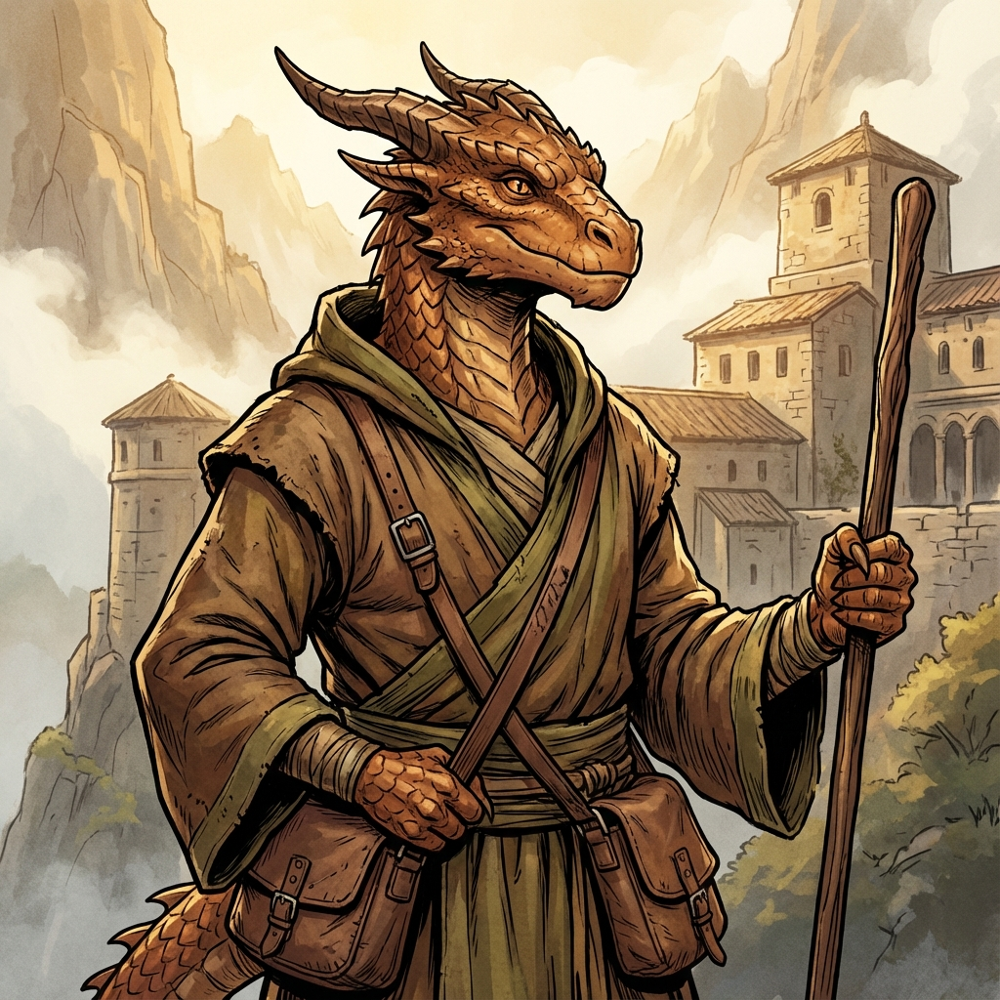

Now in his early twenties, Val serves as a courier for the Citadel, using his knowledge of hidden footpaths and chalk-marked routes to deliver messages throughout Everpeak. His training emphasizes balance and service, and he carries the monks' teachings of harmony wherever he goes.

Val
Brass Dragonborn Monk
Class: Monk
Race: Brass Dragonborn
Age: Early 20s
Background
Val was born high in the Dawnforge Mountains, just a few ridges away from Everpeak Citadel. Raised by monks who answered the century-old call to resettle the citadel after the high elves vanished, Val grew up with few certainties but many quiet rituals.
Personality
Warm, friendly, and deeply committed to serving his community. Val radiates kindness through his expressive amber eyes and carries himself with humble confidence. He's curious about the world and always ready to help others.
Physical Appearance
Just under 7 feet tall with a lean, athletic build. Warm brass-colored scales that gleam copper-bronze in light. Gentle, expressive amber eyes. Strong but graceful physique from years of courier work running mountain paths.
Abilities & Traits
**Monk Abilities:**
- **Unarmored Defense:** High AC from Dexterity and Wisdom
- **Martial Arts:** Unarmed strikes deal increased damage
- **Ki Points:** Fuels special abilities like Flurry of Blows
- **Step of the Wind:** Enhanced movement and jumping
- **Deflect Missiles:** Catch and redirect projectiles
**Brass Dragonborn Traits:**
- **Fire Resistance:** Resistant to fire damage
- **Breath Weapon:** 15-foot cone of fire
- **Draconic Ancestry:** Natural affinity for elemental magic
- **Unarmored Defense:** High AC from Dexterity and Wisdom
- **Martial Arts:** Unarmed strikes deal increased damage
- **Ki Points:** Fuels special abilities like Flurry of Blows
- **Step of the Wind:** Enhanced movement and jumping
- **Deflect Missiles:** Catch and redirect projectiles
**Brass Dragonborn Traits:**
- **Fire Resistance:** Resistant to fire damage
- **Breath Weapon:** 15-foot cone of fire
- **Draconic Ancestry:** Natural affinity for elemental magic
Equipment
- Simple monk's robes in earth tones
- Lightweight traveling gear for mountain climbing
- Courier's satchel with chalk symbols
- Prayer beads
- Simple staff (+1 weapon potential)
- Flickerfoot Shoes (Displacement essence item)
- Lightweight traveling gear for mountain climbing
- Courier's satchel with chalk symbols
- Prayer beads
- Simple staff (+1 weapon potential)
- Flickerfoot Shoes (Displacement essence item)
Player Information
**Player: Jasper (Age 13)**
**Playstyle:** Strategic combat, puzzle-solving, careful planning with calculated risks. Excels at observational details and discovering hidden secrets.
**Theme Preferences:** Exploration, mystery-solving, tactical engagement